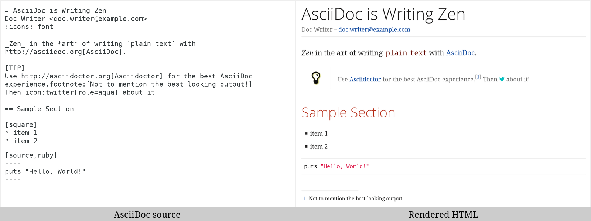

= Hello, AsciiDoc!
Doc Writer <doc@example.com>
An introduction to http://asciidoc.org[AsciiDoc].
== First Section
* item 1
* item 2
[source,ruby]
puts "Hello, World!"Asciidoctor
A fast text processor & publishing toolchain for converting AsciiDoc to HTML5, DocBook & more.
Asciidoctor is a fast text processor and publishing toolchain for converting AsciiDoc content to HTML5, DocBook 5 (or 4.5) and other formats. Asciidoctor is written in Ruby, packaged as a RubyGem and published to RubyGems.org. The gem is also included in several Linux distributions, including Fedora, Debian and Ubuntu. Asciidoctor is open source, hosted on GitHub and released under the MIT license.
The Big Picture
Asciidoctor reads content written in plain text, as shown in the panel on the left in the image below, and converts it to HTML5, as shown rendered in the right panel. Asciidoctor applies a default stylesheet to the HTML5 document to provide a pleasant out-of-the-box experience.

AsciiDoc Processing
Asciidoctor reads and parses text written in the AsciiDoc syntax, then feeds the parse tree to a set of built-in converters to produce HTML5, DocBook 5 (or 4.5) or man(ual) page output. You have the option of using your own converter or loading Tilt-supported templates to customize the generated output or produce additional formats.
Asciidoctor is a drop-in replacement for the original AsciiDoc Python processor (asciidoc.py).
The Asciidoctor test suite has > 1,600 tests to ensure compatibility with the AsciiDoc syntax.
|
In addition to the classic AsciiDoc syntax, Asciidoctor recognizes
additional markup and formatting options, such as font-based icons
(e.g., +icon:fire[]+) and UI elements (e.g., +button:[Save]+).
Asciidoctor also offers a modern, responsive theme based on Foundation to style the HTML5 output.
Requirements
Asciidoctor works on Linux, OSX (Mac) and Windows and requires one of the following implementations of Ruby:
-
MRI (Ruby 1.8.7, 1.9.3, 2.0, 2.1, 2.2 & 2.3)
-
JRuby (1.7 in Ruby 1.8 and 1.9 modes, 9000)
-
Rubinius 2.2.x
-
Opal (JavaScript)
We welcome your help testing Asciidoctor on these and other platforms. Refer to Contributing to learn how to get involved.
|
If you’re using a non-English Windows environment, you may bump into an chcp 65001 Once you make this change, all your Unicode headaches will be behind you. Asciidoctor works best when you use UTF-8 everywhere. |
Installation
Asciidoctor can be installed using (a) the gem install command, (b) Bundler or (c) package managers for popular Linux distributions.
The benefit of using a Linux package manager to install the gem is that
it handles installing Ruby and the RubyGems library if those packages
are not already installed on your machine.
The drawback is that the package may not be available immediately after
the release of the gem.
If you need the latest version, you can always fallback to using the gem command.
|
(a) gem install
Open a terminal and type (excluding the leading $):
$ gem install asciidoctor
If you want to install a pre-release version (e.g., a release candidate), use:
$ gem install asciidoctor --pre
|
Upgrading your installation
If you have an earlier version of Asciidoctor installed, you can update it using: $ gem update asciidoctor If you install a new version of the gem using $ gem cleanup asciidoctor |
(b) Bundler
-
Create a Gemfile in the root folder of your project (or the current directory)
-
Add the
asciidoctorgem to your Gemfile as follows:source 'https://rubygems.org' gem 'asciidoctor' # or specify the version explicitly # gem 'asciidoctor', '1.5.4' -
Save the Gemfile
-
Open a terminal and install the gem using:
$ bundle
To upgrade the gem, specify the new version in the Gemfile and run bundle again.
Using bundle update is not recommended as it will also update other gems, which may not be the desired result.
(c) Linux package managers
DNF (Fedora 21 or greater)
To install the gem on Fedora 21 or greater using dnf, open a terminal and type:
$ sudo dnf install -y asciidoctor
To upgrade the gem, use:
$ sudo dnf update -y asciidoctor
| Your Fedora system may be configured to automatically update packages, in which case no action is required by you to update the gem. |
apt-get (Debian Sid, Ubuntu Saucy or greater, Mint)
To install the gem on Debian, Ubuntu or Mint, open a terminal and type:
$ sudo apt-get install -y asciidoctor
To upgrade the gem, use:
$ sudo apt-get upgrade -y asciidoctor
| Your Debian or Ubuntu system may be configured to automatically update packages, in which case no action is required by you to update the gem. |
apk (Alpine Linux)
To install the gem on Alpine Linux, open a terminal and type:
$ sudo apk add asciidoctor
To upgrade the gem, use:
$ sudo apk add -u asciidoctor
| Your Alpine Linux system may be configured to automatically update packages, in which case no action is required by you to update the gem. |
Usage
If the Asciidoctor gem installed successfully, the asciidoctor command line interface (CLI) will be available on your PATH.
To verify it’s available, run the following in your terminal:
$ asciidoctor --version
You should see information about the Asciidoctor version and your Ruby environment printed in the terminal.
Asciidoctor 1.5.4 [http://asciidoctor.org] Runtime Environment (ruby 2.2.2p95 [x86_64-linux]) (lc:UTF-8 fs:UTF-8 in:- ex:UTF-8)
Asciidoctor also provides an API. The API is intended for integration with other Ruby software, such as Rails, Sinatra and GitHub, and other languages, such as Java (via AsciidoctorJ) and JavaScript (via Asciidoctor.js).
Command line interface (CLI)
The asciidoctor command allows you to invoke Asciidoctor from the command line (i.e., a terminal).
The following command converts the file README.adoc to HTML and saves the result to the file README.html in the same directory.
The name of the generated HTML file is derived from the source file by changing its file extension to .html.
$ asciidoctor README.adoc
You can control the Asciidoctor processor by adding various flags and switches, which you can learn about using:
$ asciidoctor --help
For instance, to write the file to a different directory, use:
$ asciidoctor -D output README.adoc
The asciidoctor man page provides a complete reference of the command line interface.
Refer to the following resources to learn more about how to use the asciidoctor command.
Ruby API
To use Asciidoctor in your application, you first need to require the gem:
require 'asciidoctor'You can then convert an AsciiDoc source file to an HTML file using:
Asciidoctor.convert_file 'README.adoc', to_file: true, safe: :safe
When using Asciidoctor via the API, the default safe mode is :secure.
In secure mode, several core features are disabled, including the include directive.
If you want to enable these features, you’ll need to explicitly set the safe mode to :server (recommended) or :safe.
|
You can also convert an AsciiDoc string to embeddable HTML (for inserting in an HTML page) using:
content = '_Zen_ in the art of writing http://asciidoctor.org[AsciiDoc].'
Asciidoctor.convert content, safe: :safeIf you want the full HTML document, enable the header_footer option as follows:
content = '_Zen_ in the art of writing http://asciidoctor.org[AsciiDoc].'
html = Asciidoctor.convert content, header_footer: true, safe: :safeIf you need access to the parsed document, you can split the conversion into discrete steps:
content = '_Zen_ in the art of writing http://asciidoctor.org[AsciiDoc].'
document = Asciidoctor.load content, header_footer: true, safe: :safe
puts document.doctitle
html = document.convertKeep in mind that if you don’t like the output Asciidoctor produces, you can change it! Asciidoctor supports custom converters that can handle converting from the parsed document to the generated output.
One easy way to customize the output piecemeal is by using the template converter. The template converter allows you uses supply a Tilt-supported template file to handle converting any node in the document.
However you go about it, you can have 100% control over the output. For more information about how to use the API or to customize the output, refer to the user manual.
Contributing
In the spirit of free software, everyone is encouraged to help improve this project. If you discover errors or omissions in the source code, documentation, or website content, please don’t hesitate to submit an issue or open a pull request with a fix. New contributors are always welcome!
Here are some ways you can contribute:
-
by using prerelease (alpha, beta or preview) versions
-
by reporting bugs
-
by suggesting new features
-
by writing or editing documentation
-
by writing specifications
-
by writing code — No patch is too small.
-
fix typos
-
add comments
-
clean up inconsistent whitespace
-
write tests!
-
-
by refactoring code
-
by fixing issues
-
by reviewing patches
The Contributing guide provides information on how to create, style, and submit issues, feature requests, code, and documentation to the Asciidoctor Project.
Getting Help
The Asciidoctor project is developed to help you easily write and publish your content. But we can’t do it without your feedback! We encourage you to ask questions and discuss any aspects of the project on the discussion list, on Twitter or in the chat room.
- Discussion list (Nabble)
-
#asciidoctor hashtag or @asciidoctor mention
- Chat (Gitter)
-

The Asciidoctor organization on GitHub hosts the project’s source code, issue tracker, and sub-projects.
- Source repository (git)
- Issue tracker
- Asciidoctor organization on GitHub
Copyright and Licensing
Copyright © 2012-2016 Dan Allen, Ryan Waldron and the Asciidoctor Project. Free use of this software is granted under the terms of the MIT License.
See the LICENSE file for details.
Authors
Asciidoctor is led by Dan Allen and Sarah White and has received contributions from many other individuals in Asciidoctor’s awesome community. The project was initiated in 2012 by Ryan Waldron and based on a prototype written by Nick Hengeveld.
AsciiDoc was started by Stuart Rackham and has received contributions from many other individuals in the AsciiDoc community.
Use AsciiDoc for document markup. Really. It's actually readable by humans, easier to parse and way more flexible than XML.
— Linus Torvalds
Asciidoctor Project
The
Asciidoctor project is an effort to bring a comprehensive and
accessible publishing toolchain, centered around the AsciiDoc syntax, to
a growing range of ecosystems, including Ruby, JavaScript and the JVM.
In
addition to an AsciiDoc processor and a collection of stylesheets, the
project provides plugins for Maven, Gradle and Guard and packages for
operating systems such as Fedora, Debian and Ubuntu. It also pushes
AsciiDoc to evolve by introducing new ideas and innovation and helps
promote AsciiDoc through education and advocacy.
Contribute to asciidoctor.org
This website is open source! The source is hosted under the Asciidoctor organization on GitHub.
If you want to help by improving upon it, fork the project, revise the content, then send a pull request. When the pull request is merged, the site will be updated automatically.